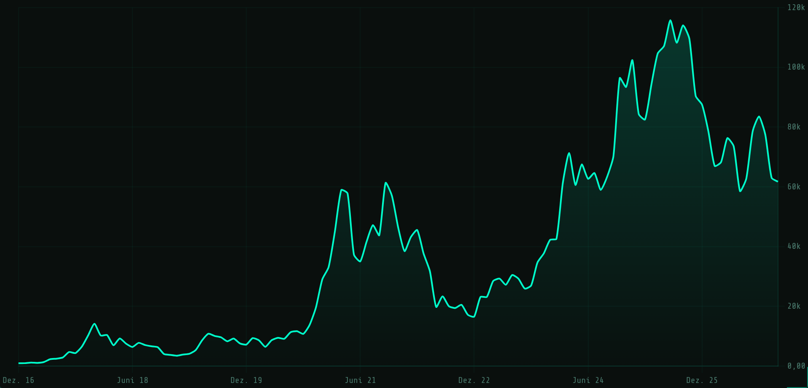
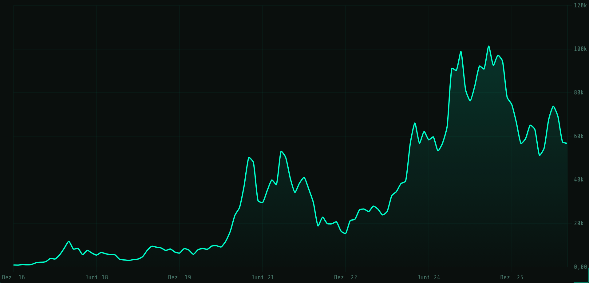
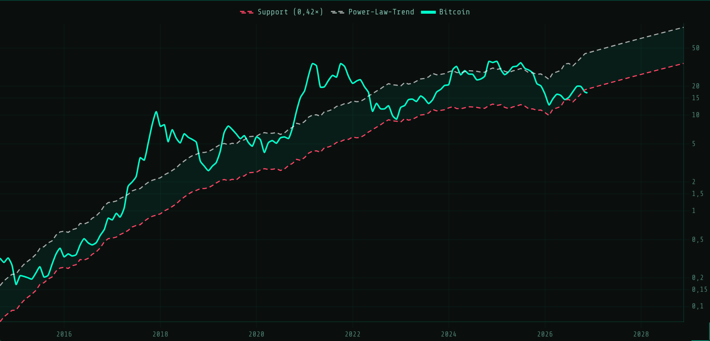
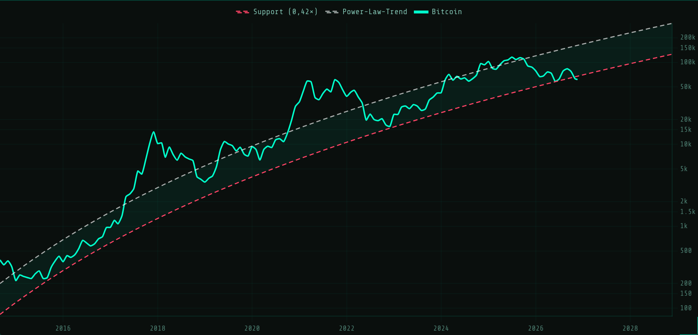

Im September stand hier: Der Support hat gehalten. Zehn Wochen später muss ich diesen Satz zurücknehmen, zumindest vorläufig. Bitcoin lief nach der letzten Analyse noch bis auf 87.400 USD (21. September), dann kippte das Umfeld: eine Fed, die erstmals seit 2023 die Zinsen erhöht hat und im Dezember wohl nachlegt, Anleiherenditen über 5 Prozent, der bisher größte Krypto-Diebstahl bei Binance und Milliarden-Abflüsse aus den Spot-ETFs. Heute steht der Kurs bei etwa 62.200 USD. Das ist noch über dem Sommertief von rund 58.000 USD, aber die Support-Linie unseres Power-Law-Korridors ist seitdem auf rund 67.800 USD gestiegen. Der Kurs liegt rund 8 Prozent darunter. Im Sommer kratzte er nur an der Linie, jetzt hat er sie deutlich unterschritten: Relativ zum Modell-Trend stand Bitcoin an keinem Monatsende seit 2014 so tief wie heute. Ob das ein Ausrutscher ist oder das Ende des Modells, entscheiden die nächsten Monatsschlüsse.
„Diese Analyse dekonstruiert die Diskrepanz zwischen Preis und Wert. Sie ist keine Kaufempfehlung, sondern ein Werkzeug zur Orientierung im vierdimensionalen Raum aus Zeit, Preis, Adoption und Energie.“
Bitcoin ist unter den Power-Law-Support gefallen und steht relativ zum Modell-Trend tiefer als an jedem Monatsende seit Beginn unserer Datenreihe 2014: Ein kurzer Ausrutscher ist nach Schocks jederzeit drin, schließt der Kurs aber auch Ende Januar noch unter der Linie, halte ich das Modell in seiner jetzigen Form für widerlegt.


Im September stand die Frage im Raum, ob die US-Notenbank die Zinsen erhöht. Sie hat es getan, und der Markt rechnet mit mehr.
Bemerkenswert: Im September hatte sich Bitcoin von den Aktienmärkten gelöst. Das hat gehalten, nur in die falsche Richtung. Der S&P 500 liegt rund 8 Prozent unter seinem Rekord vom 6. Oktober und seit Jahresbeginn noch knapp 5 Prozent im Plus. Bitcoin liegt seit Jahresbeginn rund 29 Prozent im Minus. Wer Bitcoin als Schutz vor dem Fiat-System versteht, sieht gerade die Kehrseite: In einer Phase steigender Zinsen wird er gehandelt wie ein Risiko-Asset mit Hebel.
Im September schrieb ich, Gold habe das Jahr gewonnen. Gegenüber Bitcoin gilt das noch, aber inzwischen liegt auch Gold seit Jahresbeginn rund 16 Prozent im Minus. Die Unze notiert heute bei rund 3.630 USD, rund ein Drittel unter dem Rekord Ende Januar und rund 18 Prozent unter dem Stand der letzten Analyse. Weil Bitcoin im selben Zeitraum ähnlich stark gefallen ist, hat sich das Verhältnis kaum bewegt: Ein Bitcoin kostet heute 17,1 Unzen, im September waren es 17,7. Zwischendurch stieg das Verhältnis Anfang Oktober auf rund 20,6 Unzen.
Die Lesart: Das ist kein Bitcoin-spezifischer Ausverkauf. Beide Assets zahlen keine Zinsen, und bei rund 5 Prozent Rendite auf zehnjährige Staatsanleihen hat das Halten einen Preis. Jeden einzelnen Tag erklärt das nicht: Zwischen Mitte Oktober und Anfang November fielen die Renditen, Gold und Bitcoin fielen trotzdem weiter.

In der Gold-Ansicht unseres Power-Law-Tools zeigt sich ein Detail, das man kennen muss. In Gold gerechnet hat Bitcoin seit September kaum verloren (17,7 auf 17,1 Unzen), trotzdem liegt er jetzt auch hier unter dem Support. Der Grund: Trend und Support werden durch den Gold-Monatsschluss geteilt. Fällt Gold, steigen beide Linien in Unzen. Der Support liegt heute bei 18,7 Unzen (September: rund 14), der Trend bei 44,5 Unzen (September: rund 34). Abweichung und Korridor-Position sind deshalb in beiden Ansichten identisch (61,5 Prozent unter Trend, Korridor-Position −9,9 Prozent).
Lösen wir uns vom Tagespreis und schauen auf die Mathematik der Wachstumskurve. Die Live-Werte stammen aus unserem eigenen Power-Law-Tool:

Was das heißt: Ein Modell, das über 15 Jahre gepasst hat, fällt nicht an einem Monat. Aber es muss diesen Monat erklären. Drei Lesarten gehören offen nebeneinander. Die erste: ein Untershoot. Schocks wie ein Börsen-Hack, eine Zinswende oder ein geopolitisches Ereignis können den Kurs jederzeit kurz unter die Linie drücken, eine Liquidationskaskade kennt keine Trendlinien. Dann muss er aber binnen weniger Monate in den Korridor zurückkehren. Die zweite: Abflachung. Die Zyklus-Spitzen rücken seit Jahren näher an den Trend heran (jeweils am Allzeithoch: 2017 fast das 7-Fache, 2021 knapp das 3-Fache, im Oktober 2025 nur noch rund das 1,1-Fache). Werden die Ausschläge nach oben kleiner, kann es sein, dass die Kalibrierung den Trend inzwischen zu steil zeichnet. Dann läge der faire Wert tiefer, und der Abstand zum Trend wäre kleiner, als die 61,5 Prozent suggerieren. Die dritte: Das Power Law ist schlicht falsch. Eine Kurve, die die Vergangenheit gut beschreibt, muss die Zukunft nicht kennen. Welche Lesart stimmt, weiß heute niemand.
Mein Prüfstein: Schließt der Kurs drei Monate in Folge unter dem Support, also auch zum Jahreswechsel (Linie dann bei rund 70.400 USD) und Ende Januar (rund 72.200 USD), halte ich das Modell in seiner jetzigen Form für widerlegt. Die Linie nachträglich tiefer zu ziehen, bis sie wieder passt, wäre keine Lösung: Ein Modell, das man nach jedem Bruch neu zeichnet, beschreibt nur noch die Vergangenheit. An diese Stelle gehört deshalb kein Signal, sondern ein Termin, an dem sich das Modell bewähren muss.
Trägt man den Bitcoin-Kurs doppelt-logarithmisch gegen die Zeit seit dem Genesis-Block (3. Januar 2009) auf, liegt er seit über 15 Jahren erstaunlich nah an einer Geraden. Eine Gerade im Log-Log-Diagramm bedeutet: Der Kurs wächst nach einem Potenzgesetz, nicht exponentiell, sondern mit der Zeit abflachend, aber stetig. Der Trend (weiß) ist der faire Modellwert, um den der Kurs in Zyklen pendelt: mal weit darüber (Euphorie), mal deutlich darunter (Bärenmarkt). Der Support (rot, Trend × 0,42) ist die untere Korridorgrenze, die bisher kein Bärenmarkt-Boden nachhaltig unterschritten hat.
Aktuell liegt der Kurs rund 8 Prozent unter dem Support und damit außerhalb des Korridors. Ob das „nachhaltig“ wird, entscheiden die nächsten Monatsschlüsse, nicht ein einzelner Tag. Zwei Dinge gehören dazu: Erstens steigt der Support weiter um etwa 2,7 Prozent pro Monat, der Weg zurück in den Korridor wird also jeden Monat länger. Zweitens ist das Power Law eine statistische Beobachtung, kein Naturgesetz. Es beschreibt die Vergangenheit gut, ist aber keine Garantie für die Zukunft. Nutze es als Landkarte zur Einordnung, nicht als Versprechen.
Was sagen die Ketten-Daten jenseits des Tagespreises?
Im September kam der Kaufdruck aus dem ETF-Mantel. Jetzt kommt der Verkaufsdruck von dort:
Die Lesart: Das Geld, das im August und September über die ETFs kam, fließt jetzt bei deutlich tieferen Kursen wieder ab. Bitcoin selbst hat sich in diesen zehn Wochen nicht verändert. Verändert hat sich, wer ihn gerade hält, und wie viel Geduld diese Halter haben.
Die Hashrate liegt im Sieben-Tage-Schnitt bei rund 990 EH/s (mempool.space), nach rund 933 EH/s
im September und einem Hoch von rund 1.080 EH/s Ende Oktober. Die Difficulty stieg bis zum 29. Oktober in mehreren
Schritten auf 148,4 Billionen und fiel am 14. November um 9,1 Prozent auf 134,8 Billionen, der
stärkste Rückgang seit Juni. Laut Hashrate Index lag das vor allem an hohen Strompreisen in Westtexas, weniger am
Kurs. Der Hashprice, also der Erlös pro Rechenleistung, liegt bei rund 30 USD pro PH/s und Tag, im Oktober lag er im
Schnitt bei rund 38.
Das Signal: Gelistete Miner verkaufen. MARA hat seinen Bestand von rund 53.800 BTC Ende 2025 auf
rund 34.000 BTC Ende September abgebaut und danach weitere rund 13.600 BTC verkauft, Riot in neun Monaten über
20.000 BTC. Ein Teil des Geldes fließt in Rechenzentren für KI. Das Netzwerk selbst läuft ungerührt weiter, die
Difficulty-Anpassung tut, was sie soll. Der Druck kommt nicht aus dem Protokoll, sondern aus den Bilanzen der
Firmen, die es betreiben.
Am 29. Oktober wurden bei Binance Kryptowerte für rund 6,3 Mrd USD gestohlen, darunter rund 18.270 BTC. Nach Angaben der Analysefirmen Elliptic und TRM Labs ist das der größte Krypto-Diebstahl der Geschichte. Das FBI ordnete den Angriff am 31. Oktober Nordkorea zu (Gruppe „TraderTraitor“). Bitcoin fiel am Tag des Hacks um gut 4 Prozent. Auszahlungen liefen ab dem 1. November schrittweise wieder an, am 12. November meldete Binance, alle betroffenen Guthaben aus eigenen Mitteln ersetzt zu haben.
Und der Liquid-Vorfall aus der letzten Analyse: Seit dem 2. November ist L-BTC wieder voll gedeckt. Nach Angaben aus dem Vorstand der Liquid Federation hat Blockstream die Lücke geschlossen. Die geforderte Prämie für die restlichen rund 600 BTC, die der Angreifer weiter hält, lehnte Blockstream ab.
Die Lehre ist dieselbe wie im September: In beiden Fällen hatten die Kunden Glück, dass jemand mit tiefen Taschen eingesprungen ist. Darauf baut man kein Vermögen. Wer den Schlüssel nicht hält, hält ein Versprechen.
Die folgenden Szenarien sind meine Einschätzung, keine Prognose. Sie beschreiben, welche Marken im Modell und in den Ketten-Daten als Nächstes wichtig werden:
Wenn du Bitcoin möglichst eigenverantwortlich halten willst, nutze nicht dein Bankdepot:
Hinweis: Bei einigen Links handelt es sich um Affiliate-Links. Wenn du sie nutzt, erhalte ich eine Vergütung. Danke!
Kurs- und Power-Law-Werte stammen aus unserem eigenen Charts-Tool (api.alien-investor.org). Tageskurse (Kraken, CoinGecko), ETF-Flows (SoSoValue, Farside), On-Chain-Daten (Glassnode, CryptoQuant), Liquidationen (CoinGlass), Hashrate und Difficulty (mempool.space, Hashrate Index), Fed-, Inflations- und Arbeitsmarktdaten (federalreserve.gov, BLS), Zinserwartungen (CME FedWatch), Anleiherenditen (FRED, CME Group), MVRV-Zyklen (Galaxy Research), Strategy und MARA (SEC-Filings), der Binance-Hack (Elliptic, TRM Labs), der Liquid-Vorfall (Blockstream, The Block) und der Crypto Fear & Greed Index (alternative.me) wurden gegen unabhängige Quellen gegengeprüft. Stand: 19. November 2026.
Danke für deine Unterstützung – für freie Inhalte, Finanzsouveränität und den außerirdischen Widerstand!